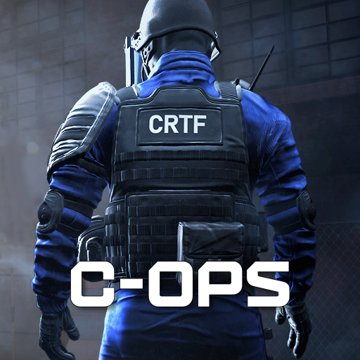
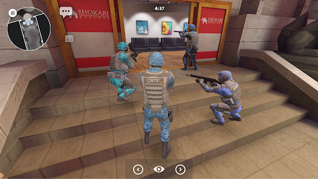
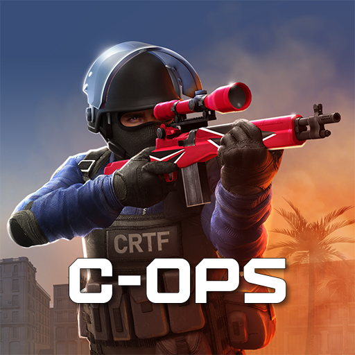

O que é o Critical Ops?
Critical Ops é um jogo de tiro em primeira pessoa (FPS) competitivo para celular, desenvolvido pela empresa finlandesa Critical Force. Ele é muito comparado a jogos como Counter-Strike por focar em partidas rápidas, estratégia e precisão.

Objetivo
No Critical Ops, o objetivo depende do modo de jogo, mas a ideia principal é vencer a equipe adversária usando estratégia, mira e trabalho em equipe.
Modo principal: Defuse (Desarmar bomba). É o modo mais competitivo. Terroristas precisam plantar a bomba e protegê-la até explodir. Contra-terroristas precisam impedir o plantio ou desarmar a bomba antes da explosão. Você também pode vencer eliminando todos os jogadores do outro time.

Modos de jogo
Os principais modos de jogo de Critical Ops são:
- Defuse (Desarme) — O modo mais competitivo. O time The Breach planta a bomba e o time Coalition tenta impedir ou desarmar. Também vence quem eliminar todo o time inimigo. É o modo mais parecido com Counter-Strike.
- Ranked Defuse — Versão ranqueada do Defuse. Você sobe ou desce de rank conforme suas partidas. Muito usado por jogadores experientes.
- Team Deathmatch — Modo focado em eliminações com respawn infinito. Ganha o time com mais kills no tempo limite. Bom para treinar mira e reflexo.
- Gun Game — Cada eliminação troca sua arma. Quem chegar na última arma e finalizar primeiro vence.
- Elimination — Modo sem respawn. Morreu, espera a rodada acabar. Último time vivo vence.
- Practice / Training Grounds — Modo treino para praticar mira, armas e movimentação. Pode jogar contra bots.
- Wingman — Modo 2v2 com mapas menores e partidas rápidas e estratégicas.
- Modos especiais/eventos — Modos temporários como Manhunt, Rush, Defend e Manhunt Z.

Links e Recursos
Acesse os canais oficiais do Critical Ops para notícias, atualizações e comunidade:
- Site oficial — Notícias e atualizações aqui.
- Critical Ops na Google Play — Download gratuito.